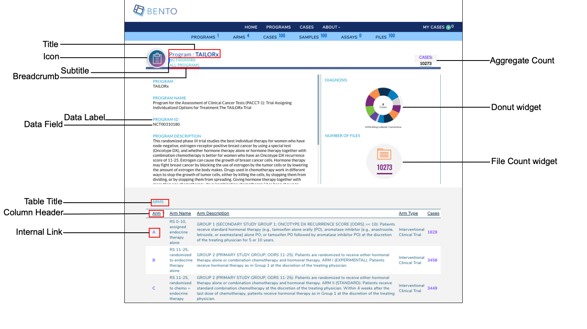

4. Program Detail Page¶
The Program Detail Page displays detailed, program-level information for each of the programs that has submitted data to your data sharing platform. A Bento Program Detail Page has several configurable components. See below for details.

Program Detail Page Elements. Displayed are the configurable components of a Bento Program Detail Page: Program Detail Page Title, Program Detail Page Subtitle, Program Detail Page Icon, Breadcrumb, Data Labels, Data Fields, Table Title, Table Column Header, Table Column Content, Program Level Aggregate Count, Program Level Donut Widget, Program Level File Count Widget and Embedded External and Internal Links.
4.1. Prerequisites¶
The files that specify the configuration parameters of the Bento Landing Page are stored in the GitHub
https://github.com/CBIIT/bento-frontend(representing your GitHub username asYOUR-USERNAME). Create a local clone of your fork into a local directory, represented in these instructions as$(src).Configuration Parameters for all Program Detail Page elements can be specified in the file:
$(src)/bento-frontend/blob/master/src/bento/programDetailData.js.All images and icons that you use in your Bento instance should be accessible via a public url.
Please review the list of GraphQL queries to select query type(s) that return your data of interest.
4.2. Page Title Configuration¶
The Page Title section has three components: (a) Page Title (b) Page Subtitle and (c) Breadcrumb.
4.2.1. Configuring the Page Title, Page Subtitle and Breadcrumb¶
Open
$(src)/bento-frontend/src/bento/programDetailData.js.Under
pageTitle:Set the field
labelto the Page Title of your choice.Set the field
datafieldto the GraphQl API query that returns the Page Title.
Under pageSubTitle:
Set the field
datafieldto the GraphQL API query that will return the Page Subtitle.
Under
breadCrumb:Set the field
labelto the Breadcrumb text of your choice.Set the field
linkto the internal link to be embedded in your Breadcrumb.
Add your GraphQL API queries to
PROGRAM_DETAIL_QUERY.Example:
...
const pageTitle = {
label: '<Your Page Title>',
datafield: '<GraphQL API query that returns the Page Title>',
};
const pageSubTitle = {
datafield: '<GraphQL API query that returns the Page Subtitle>',
};
const breadCrumb = {
label: '<Your Breadcrumb display text>',
link: '<Your Breadcrumb embedded link>',
};
...
4.3. Configuring the Aggregate Count¶
The Program Level Aggregate Count field allows you to display a Program level count for an key data entity in your data sharing platform.
Open
$(src)/bento-frontend/src/bento/programDetailData.js.Under
aggregateCount:Set the field
labelTextto the display text for the aggregate count of your choice.Set the field
dataFieldto the GraphQL API query that returns your aggregate count.Set the field ‘link’ to the embedded link for the aggregate count. This is usually a link to an internal page that displays additional detail on the aggregate count.
Set the field
displayto ‘true’ if you want to display an aggregate count, ‘false’ otherwise.
Add your GraphQL API queries to
GET_PROGRAM_DETAIL_DATA_QUERY.Example:
...
const aggregateCount = {
labelText: '<Display label for your Aggregate Count>',
dataField: '<GraphQL API query that returns your Aggregate Count>',
link: '<embedded link for you Aggregate Count>',
display: '<true|false>',
};
...
const GET_PROGRAM_DETAIL_DATA_QUERY = gql`{
...
'<Your GraphQL API query>'
...
}
4.4. Configuring icons in the Program Detail Page¶
The Progam Detail Page supports a Program Detail Page Icon, displayed next to the Program Title, and an External Link Icon, that is displayed next to an external link in the page.
Open
$(src)/bento-frontend/src/bento/programDetailData.js.Under
programDetailIcon:Set the field ‘src’ to the URL for the Program Detail Page Icon of your choice.
Set the field ‘alt’ to the ALT tag for the Program Detail Page Icon.
Under
externalLinkIcon:Set the field ‘src’ to the URL for the External Link Icon of your choice.
Set the field ‘alt’ to the ALT tag for the External Link Icon.
Example:
...
const programDetailIcon = {
src: '<URL to your Program Detail Page Icon>',
alt: '<ALT tag for your Program Detail Page Icon>',
};
const externalLinkIcon = {
src: '<URL to your External Link Icon>',
alt: '<ALT tag for your External Link Icon>',
};
...
4.5. Configuring the Program Detail Page Panels¶
The Program Detail Page is divided into a Left Hand Panel and a Right Hand Panel. The Left Panel displays a set of Program specific details in the form of label-value pairs. The Right Panel displays Program level information as a set of graphics.
4.5.1. Configuring the Left Hand Panel¶
The left panel can display a maximum of 6 attributes as label:value pairs. If you add more than 6 attributes, Bento will display only the first 6 attributes without a warning or error message.
Open
$(src)/bento-frontend/src/bento/programDetailData.js.Under
leftPanel:Add an object ({dataField: ; label: })to the
attributelist.Set the field
dataFieldto the GraphQL API query that returns the data field of your choice. This will be displayed as the value of in a label:value pair.Set the field
labelto a display label of your choice.
Add your GraphQL API queries to
PROGRAM_DETAIL_QUERY.You can add an embedded link to your label or your value, or both. Links can be internal or external.
To add a link to your value specify an internal or external link by adding a
linkattribute to your object.To add a link to your label specify an internal or external link by adding a
internalLinkToLabelorexternalLinkToLabelattribute, respectively, to your object. Examples of four types of embedded links are given below. See below for additional notes on adding internal and external links.
Example:
...
const leftPanel = {
attribute: [
{
//Label:Value pair with an internal link embedded in the Value.
dataField: '<GraphQL API query that returns the data for this label/value pair>',
label: '<Label text for this label/value pair>',
link : '</programs/{program_id}>',
},
{
//Label:Value pair with an external link embedded in the Value.
dataField: '<GraphQL API query that returns the data for this label/value pair>',
label: '<Label text for this label/value pair>',
link : '<https://cancer.sanger.ac.uk/cosmic/mutation/overview?id=113681877>',
},
{
//Label:Value pair with an internal link embedded in the Label.
dataField: '<GraphQL API query that returns the data for this label/value pair>',
label: '<Label text for this label/value pair>',
internalLinkToLabel: '</programs/{program_id}>',
},
{
//Label:Value pair with an external link embedded in the Label.
dataField: '<GraphQL API query that returns the data for this label/value pair>',
label: '<Label text for this label/value pair>',
externalLinkToLabel: '<https://cancer.sanger.ac.uk/cosmic/mutation/overview?id=113681877>',
},
...
]
}
...
const GET_PROGRAM_DETAIL_DATA_QUERY = gql`{
...
'<Your GraphQL API query>'
...
}
4.5.1.1. Internal Links to Labels and Values¶
links starting with ‘/’ are considered as internal links
Internal links shall be opened in the same tab.
Dynamic links can be generated by passing a valid table filed to ‘{}’. For example, ‘/arm/{study_acronym}’ shall link to ‘arm/A’
4.5.1.2. External Links to Labels and Values¶
External links shall start with ‘http://’ or’https://’
External links shall show-up with ‘externalLinkIcon’
External link shall be opened in a new tab.
Dynamic links can be generated by passing a valid table filed to ‘{}’. For example, ‘https://pubmed.ncbi.nlm.nih.gov/{pubmed_id}’ shall link to ‘https://pubmed.ncbi.nlm.nih.gov/29860917/’
4.6. Configuring the Right Hand Panel¶
In the current version of Bento, you can (a) add a donut widget that displays the counts by value of a key data entity in your data sharing platform and (b) add a count of files stored for the given program.
4.6.1. Configuring the Donut widget¶
Open
$(src)/bento-frontend/src/bento/programDetailData.js.Under
rightPanel:
Under
widget:Set the field
dataFieldto the GraphQL API query that returns the counts by value for your data entity.Set the field
labelto a display label for the widget.Set the field
displayto true if you want to display the widget and tofalse, otherwise.Update
GET_PROGRAM_DETAIL_DATA_QUERYwith yor GraphQL API query.
Example:
...
const rightPanel = {
widget: [
{
dataField: '<GraphQl API that returns the counts by value for your data entity>',
label: '<Widget Label>',
display: 'true|false',
},
],
...
}
...
const GET_PROGRAM_DETAIL_DATA_QUERY = gql`{
...
'<Your GraphQL API query>'
...
}
...
4.6.2. Configuring the File Count widget¶
The File count graphic displays the number of Program Level files.
Open
$(src)/bento-frontend/src/bento/programDetailData.js.Under
files:Set the field
dataFieldto the GraphQL API query that returns the number of program-level files.Set the field
labelto the display label text for the File Count widget.Set the field
fileIconSrcto the URL for the File Icon of your choice.Set the field
fileIconAltto the ALT tag for the File Icon.Set the field
displayto ‘true’ if you want to display the File Count widget and to ‘false’, otherwise.Update
GET_PROGRAM_DETAIL_DATA_QUERYwith the API query that returns file counts.
Example:
...
const rightPanelAttributes = {
...
files: [
{
dataField: '<GraphQL API returning program level file count>',
label: '<Display label for File Count widget>',
fileIconSrc: '<URL for File Icon image>',
fileIconAlt: '<ALT tag for File Icon>',
display: 'true|false',
},
],
};
...
const GET_PROGRAM_DETAIL_DATA_QUERY = gql`{
...
'<Your GraphQL API query>'
...
}
...
4.7. The Program Detail Page Table¶
The Program Detail Page table can be used to display program-level information such as the studies or projects that belong to the program.
4.7.1. Configuring the Program Detail Page Table.¶
Open
$(src)/bento-frontend/src/bento/programDetailData.js.In
table:
The
displayfield is set to true, by default. Set this field to false if you do not wish to display a table in the Program Detail Page.Set the field
titleto the the title of your table.Set the field
dataFieldto the name of the GraphQL API query being used to return data for the Program Detail Page. Note: This query should match the GraphQL API query inGET_PROGRAM_DETAIL_DATA_QUERY.Set the field
defaultSortFieldto the name of the query field that will be used to sort the Program Detail Page Table. Note: this query field should be displayed as one of the columns in the Program Detail Page Table.Set the field
defaultSortDirectionto the sort order of your choice. Valid values are ‘asc’ (ascending) and ‘desc’ (descending).Add your GraphQL API query to
GET_PROGRAM_DETAIL_DATA_QUERY.
Example:
...
const table = {
display: true,
title: '<Table Title>',
dataField: '<GraphQL API query returning data for this page.>',
defaultSortField: '<GraphQL API query field used to sort the table.>',
defaultSortDirection: '<sort order, asc|desc>',
...
const GET_PROGRAM_DETAIL_DATA_QUERY = gql`{
'<Your GraphQL query>'' {
'<Data fields returned by your GraphQL API query>'
...
}
}
4.7.2. Adding columns to the Program Detail Page Table.¶
You can add up to 10 columns in the Program Detail Page Table. If you add more than 10 columns, Bento will display the first 10 columns without an error or warning message. The top-down order of columns will be displayed left to right on the UI.
Open
$(src)/bento-frontend/src/bento/programDetailData.js.Under
table, add an object{dataField: , header: , link: ,}to thecolumnslist:
Set the field
dataFieldto the GraphQL API query data field that returns the data for the column.Set the field
headerto the column header name.Set the field
linkto an internal or external link that is to be embedded into the the column value. See below for additional instructions on adding internal and external links. Links are optional.Add your GraphQL API query data field to
GET_PROGRAM_DETAIL_QUERY.
Example:
const table = {
...
columns: [
{
dataField: '<GraphQL API query field returning data for this column>',
header: '<Column Header>',
link: '<link to be embedded in column value>',
},
{
dataField: '<GraphQL API query field returning data for this column>',
header: 'PubMed ID',
},
...
],
};
const GET_PROGRAM_DETAIL_DATA_QUERY = gql`{
'<Your GraphQL query>'' {
'<Data fields returned by your GraphQL API query>'
...
}
}
4.7.2.1. Internal Links in the Program Detail Page Table.¶
links starting with ‘/’ are considered as internal links.
Internal links shall be opened in the same tab.
Dynamic links can be generated by passing a valid table field to ‘{}’. For example, ‘/program/{program_id}’ shall link to ‘program/NCT00310180’.
4.7.2.2. External Links in the Program Detail Page Table.¶
External links shall start with ‘http://’ or’https://’.
External links shall show-up with ‘externalLinkIcon’.
External link shall be opened in a new tab.
Dynamic links can be generated by passing a valid table filed to ‘{}’. For example, ‘https://pubmed.ncbi.nlm.nih.gov/{pubmed_id}’ shall link to ‘https://pubmed.ncbi.nlm.nih.gov/29860917/’.
4.8. Suggested Best Practice¶
Dimension of the Program Detail Page Icon= 107 X 107 pixels
Dimension of the File Icon = 66 X 53 pixels
Dimension of the External Link Icon = 16 X 16 pixels.
All images should have a resolution >= 72 ppi and should be in the PNG format.